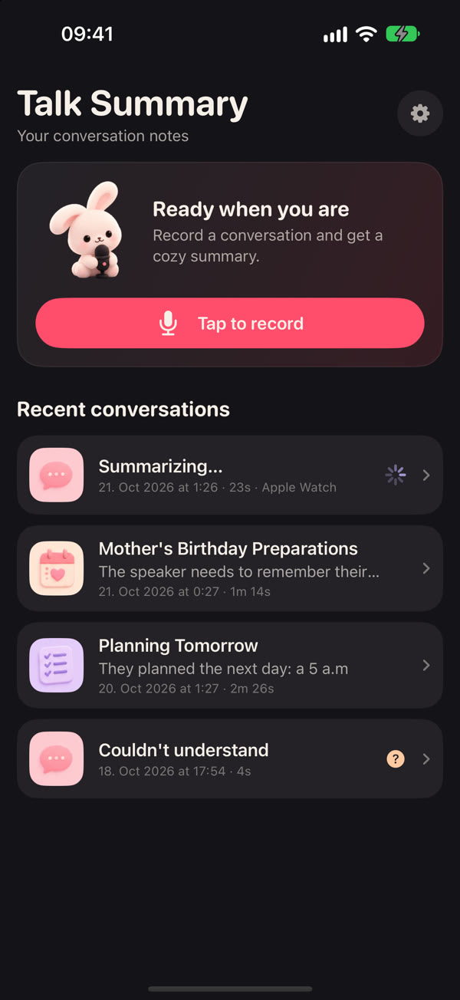
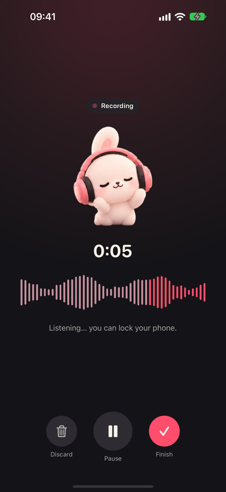
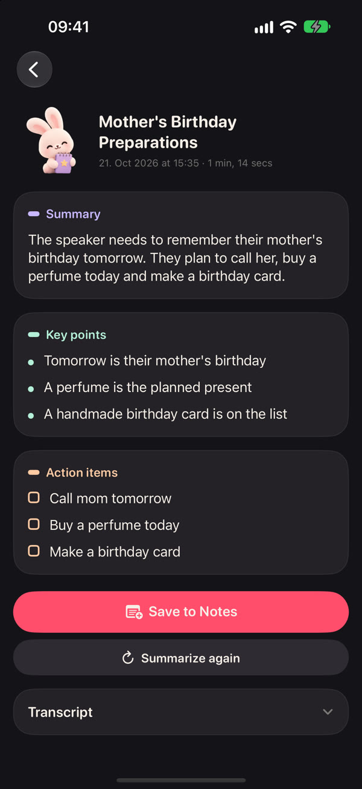
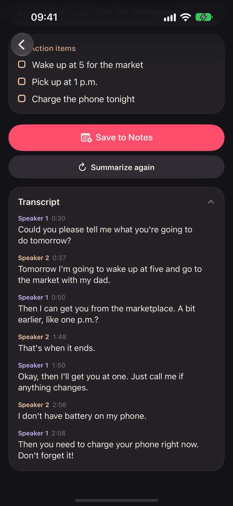
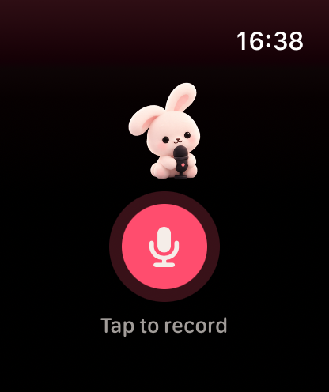
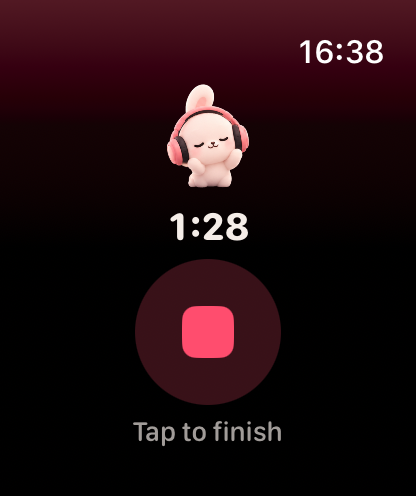
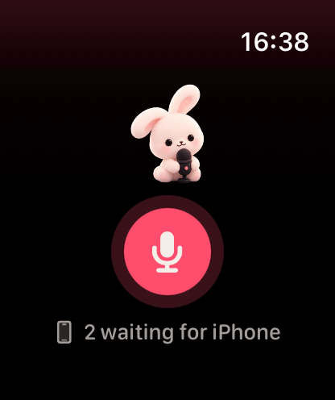

Talk, tap, done
Record, and a few moments later your summary is ready to read or save to Notes.




Small app, big ears
Everything you need to remember a conversation, and nothing you don't.
Summaries you can trust
Key points and action items are checked against what was actually said. If a recording can't be understood, the app says so instead of guessing.
About 100 languages
Mixed-language conversations work sentence by sentence, and the summary comes in the language you pick.
Who said what
The transcript is split by speaker, whether it's just you or a whole group, with the time of every line.
Save to Notes
Send a summary to Notes in two taps, titled with the date of the conversation, into any folder you like.
Pause, resume, finish
A live waveform shows it's listening. Lock your phone, take a call, and pick up where you left off.
A friendly bunny
A plush bunny keeps you company: it listens, thinks and hands you the notebook when your summary is ready.
Right from your wrist
Start a recording on Apple Watch, even when your iPhone is in another room. The recording travels to your iPhone as soon as they're close again, and the summary is waiting for you there.



Private by design
Transcription, speaker detection and summaries happen on your iPhone. Your audio never leaves it.
- No accounts
- No ads
- No tracking
- Works offline
- No data collected
Meet the bunny
Listening, thinking, taking notes and, now and then, a little nap.